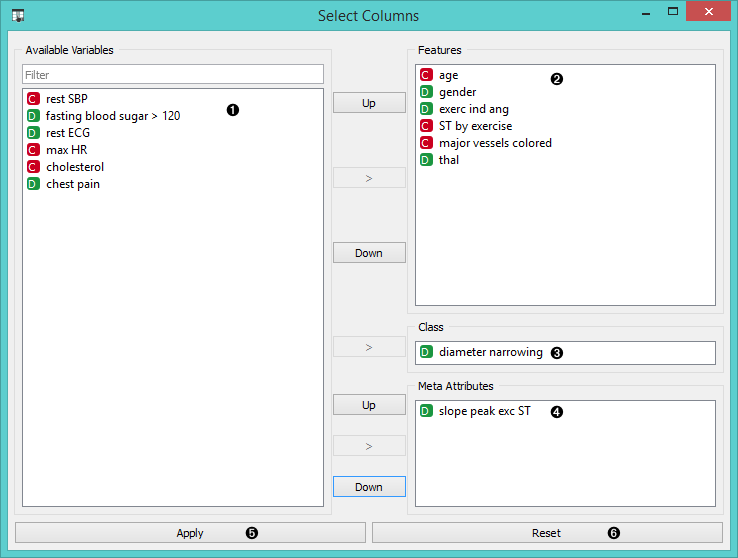

Select Columns

Manual selection of data attributes and composition of data domain.
Signals
Inputs:
- Data
Attribute-valued data set.
Outputs:
- Data
Attribute-valued data set composed using the domain specification from the widget.
Description
Select Columns widget is used to manually compose your data domain. User can decide which attributes will be used and how. Orange distinguishes between ordinary attributes, an (optional) class attributes and meta attributes. For instance, for building a classification model, the domain would be composed of a set of attributes and a discrete class attribute. Meta attributes are not used in modelling, but several widgets can use them for instance labels.
Orange attributes are typed and are either discrete, continuous or a character string. The attribute type is marked with a symbol appearing before the name of the attribute (D, C, S, respectively).

- Left-out data attributes that will not be in the output data file.
- Data attributes in the new data file.
- A class attribute. If none, the new data set will be classless.
- Meta attributes of the new data file. These attributes are included in the data set but are, for most of the methods, not considered in analysis.
- Apply change of the data domain and send the new data file to the output channel of the widget.
- Reset the domain composition to that of the input data file.
Example
In a workflow below an input data from the File widget is fed to Select Columns widget, which outputs the data to the Data Table.

We used the schema to redefine the classification problem in heart disease data set. Originally, the task was to predict if the patient has a coronary artery diameter narrowing. We changed the problem to that of gender classification based on age, chest pain and cholesterol level, and informatively kept the diameter narrowing as a meta attribute.